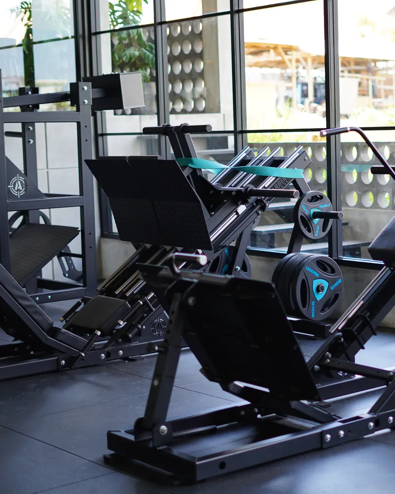
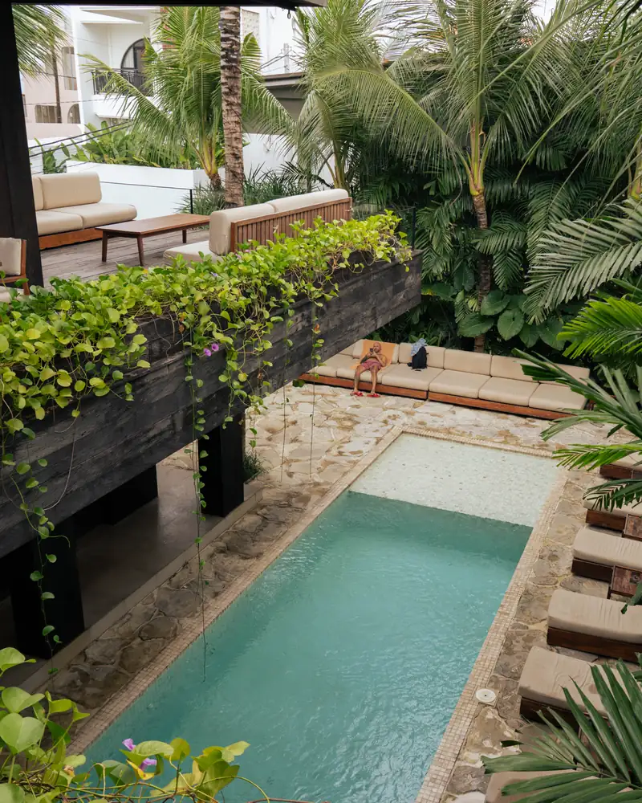
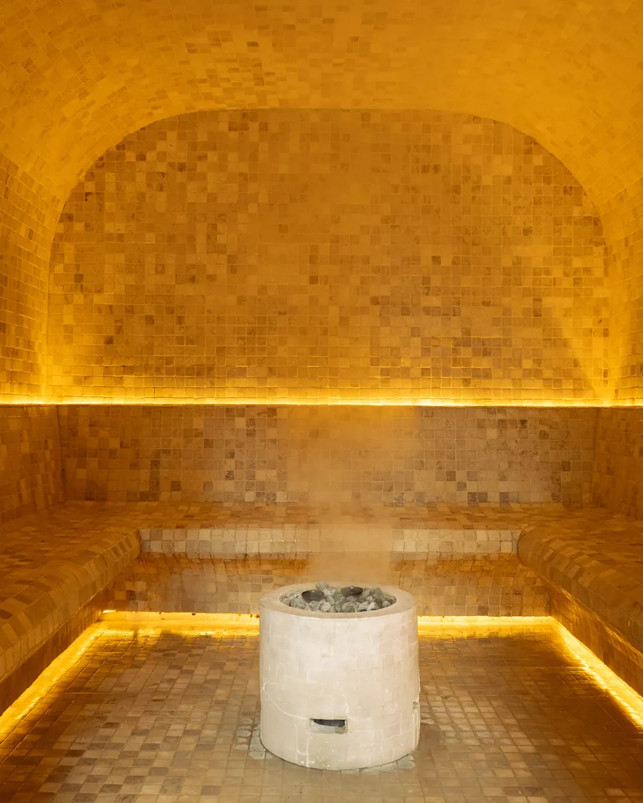

The gym floor
Perform
Plate-loaded floor on Arsenal Strength, Panatta and Prime. Open 6:00–22:00.
Perform passesscratch: end of passes
Perform is the gym floor. Recharge is the pool deck and the four rooms behind it. Elite is both. Classes run on the Perform side.

Plate-loaded floor on Arsenal Strength, Panatta and Prime. Open 6:00–22:00.
Perform passes
Pool deck, loungers, sauna, steam, jacuzzi, ice bath. Open 6:30–22:00.
The four rooms
One hour, up to seven a day, booked in the GymMaster app. Free with Perform and Elite.
Today's classesCold plunge, jacuzzi, steam and sauna sit side by side on the Recharge side, with the pool deck in between. Open 6:30–22:00, seven days.

Two sunken plunge pools in a sand-tiled room, filled to 4–6°.

Warm water at 38–40°, the first stop after the cold.

A Turkish steam room: wet heat at 38–40°, the gentle one.

Timber benches on two tiers and a window to the garden, 80–100°.
Treatments on request, booked 48 hours ahead: dietitian, sports massage, physio and manual therapy.
scratch: coaches (black steel)
scratch